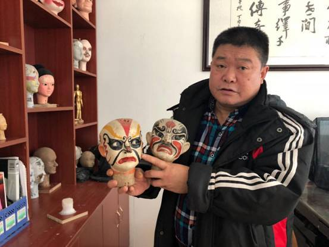
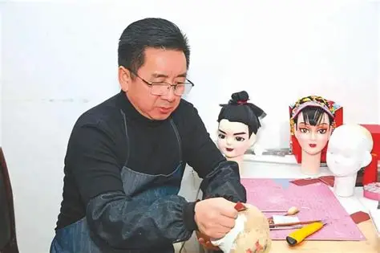

非遗传承人故事
一生守一艺，一偶一传承

唐友民（第四代传承人）
1958年生于资中木偶戏世家，12岁随父学习木偶雕刻与操控，至今从艺50余年。
唐友民熟练掌握木偶制作80余道工序，能独立完成从选料到装杆的全流程，其雕刻的木偶面部神态逼真，眼嘴开合自然，曾获“四川省民间工艺大师”称号。
他打破“传男不传女、传内不传外”的传统，免费开设木偶戏培训班，累计培养学员200余人，其中不乏90后、00后年轻传承人，让百年技艺得以延续。
“以手刻木，以心传艺，守住资中木偶百年根脉。”

胡海（资中木偶剧团团长）
1970年11月出生于资中县，四川省非物质文化遗产代表性传承人。
他采用人偶同台的表演方式，让操纵木偶的演员从幕后走到台前，打破了舞台与观众之间的“第四堵墙”，并将川剧变脸、吐火、杂耍等川味综艺元素以及内江的饮食文化巧妙融入表演。
他热情组织实施木偶戏普及、文化下乡、进校园演出、制作工艺进课堂活动，培养木偶戏传承人多人。
作为中国人，要有文化自信，要勇于创新。